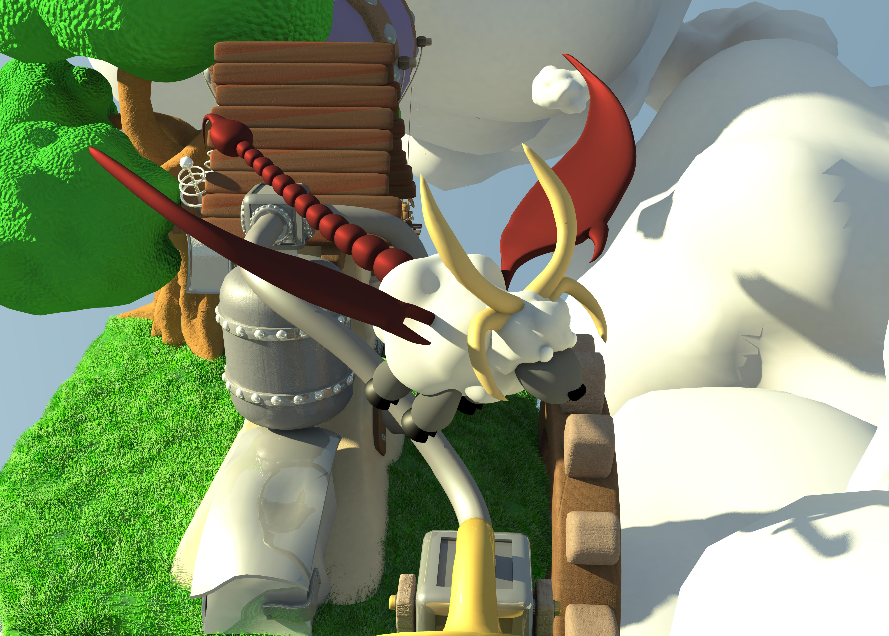
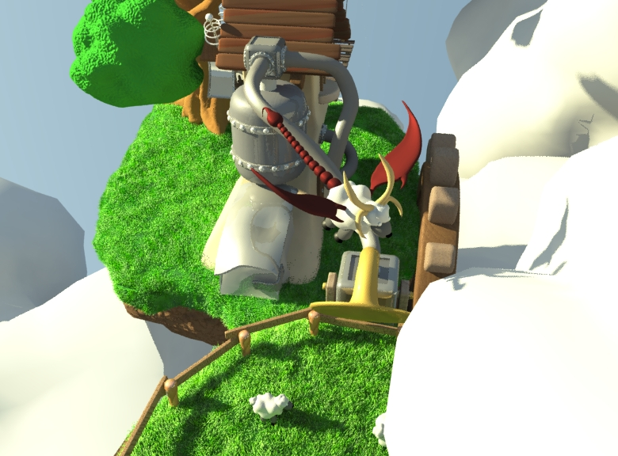
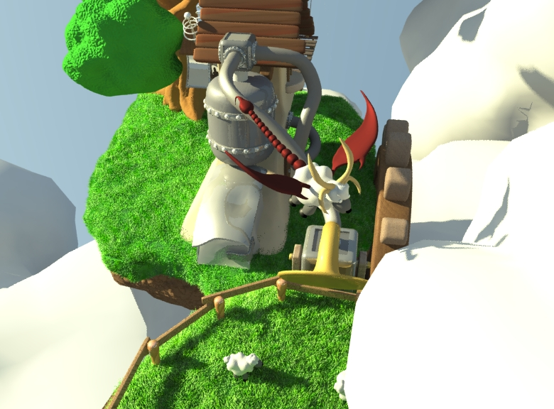

Cloud Factory
Finished in May 2014
Reason to create project:
This project was created as the 2nd project for course KMA [1] during my bachelor studies.[3]
About project:
Task was to create, animate and render anything we want.
I decided to create factory creating clouds.
Project was created in Maya 2014 (Student licence), rendered by Mental Ray.
Scene contains 2 flying islands. Greater one contains most of the factory. Giant cog wheels spins over time and there is retractable bridge where Engineer is fishing.
Smaller island contains several sheep in a pen and drain for wool collecting which is connected to rest of factory. Near main island there is a small airship.
Sky around factory is filled with great amount of clouds that are in motion. There is also a sheepicore flying in the sky.
Most objects (clouds, smaller island, airship, tree(slowly sways in the wind), cog wheels, retractable bridge) are animated using expressions.
Idea behind project:
I got inspired by a song[2] one or two weeks before we had to choose our project. I took the idea of a island with small factory flying high in the sky spewing clouds.
This idea was immediately followed by idea that factory should make clouds from wool(I always draw sheep body as cloud).
Resources:
Bump-Scratches01.jpg - source: http://www.geminoidi.com/images/textures/imperfections_and_scratches_texture.jpg
Everything else is made by Maya 3D textures and different Maya functions (Crater, Ramp, Noise,...).
Sheep and Sheepicore models are from my older project (Sheepicore).
Scene is expected to be used in Maya. Exported .fbx file probably doesn't have all the functions or correct look. (.fbx scene is just for preview or to access models even without Maya)
[1] KMA (Kurz multimediálních aplikací - Multimedia Applications Course) - http://leyfi.felk.cvut.cz/courses/kma/ (course was about modelling in Maya)
[2] song Cloud Factory from Sonata Arctica (album Pariah's Child).
[3] First project for KMA was Watch.
Renders:



 
Concept Arts:

Concept Arts:


 Renders: (when project was not finished)
Renders: (when project was not finished)
/test01.jpg)
/Island1.jpg)
/Island1.png)
/Island2.png)
/Island3.png)
/Island4.png) Video:
download
Video:
download